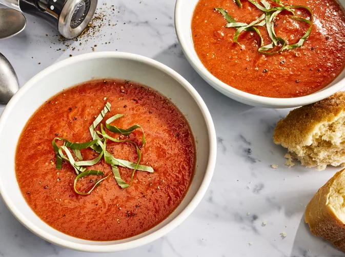

Fresh Tomato Soup

Description
This tomato soup recipe uses fresh tomatoes and will remind you of your mother's famous cooking.
Sure the can of tomato soup works in a time crunch, but nothing beats the delicious flavours
of a soup you made from scratch with fresh ingredients. So say goodbye to canned soup forever
and hello to your new favourite tomato soup recipe.
Ingredients
- 4 cups chopped fresh tomatoes
- 2 cups chicken broth
- 4 cloves garlic
- 1 large slice of onion
- 2 tablespoons butter
- 2 tablespoons all-purpose flour
- 2 teaspoons white sugar, or to taste
- 1 teaspoon salt, or to taste
Directions
- Gather all ingredients in separate bowls
- Combine tomatoes, chicken broth, garlic cloves,
and a large slice of onion in a stockpot over
medium heat. Bring to a boil, and gently simmer
for about 20 minutes to blend flavors.
- Remove from heat and run the mixture through a food
mill into a large bowl, or pan. Discard any stuff
left over in the food mill.
- Melt butter over medium heat in the now empty stockpot.
Stir in flour to make a roux by cooking, whisking constantly,
until mixture turns medium brown.
- Gradually whisk in a bit of the tomato mixture to prevent lumps
from forming, then stir in the rest.
- Season with sugar and salt to taste.
- Serve hot and enjoy!